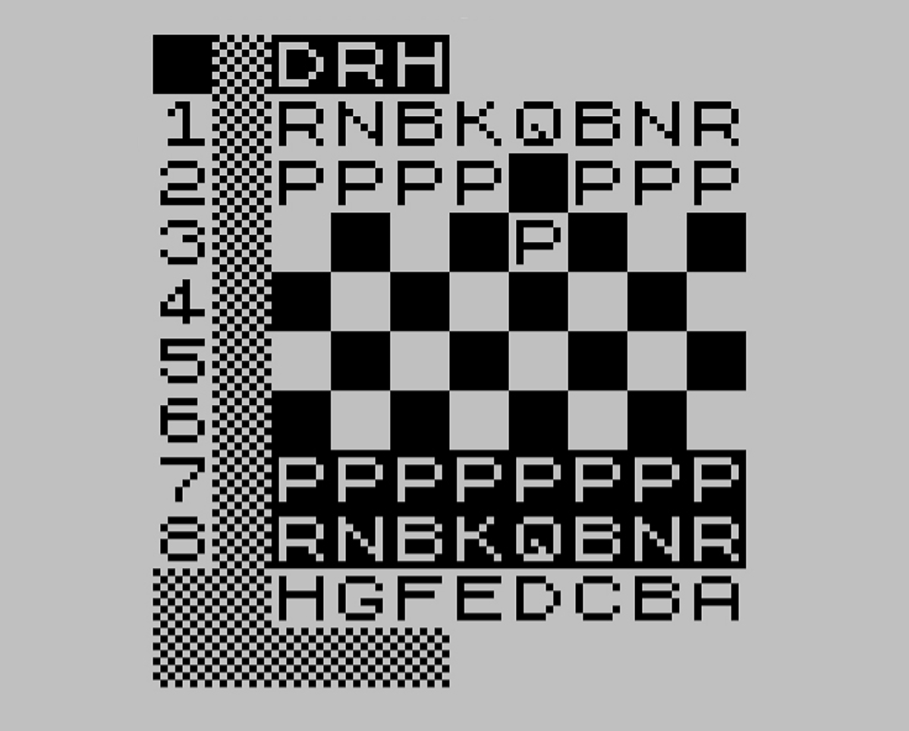
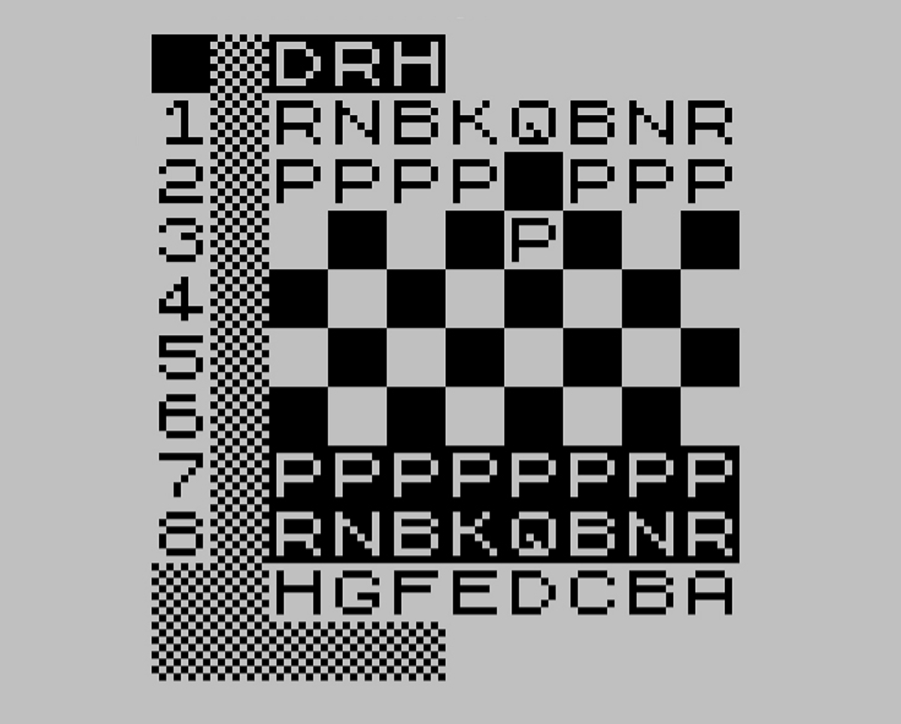

Jupiter Ace
- keyboard
- Editor
- comments quotes
- Vocabularies
Jupiter Ace
- Company: Jupiter Cantab
- Founders: Richard Altwasser (hardware) and Steven Vickers (software)
- Worked on ZX-81, ZX-Spectrum
- Named after Automatic Computing Engine (early British Computer)
Jupiter Ace
- 1982
- CPU: Zilog Z80A 3.25MHz
- ROM: 8KB Forth
- RAM: 1KB base (expandable to 49KB)
- Video RAM: 1KB charmap, 1KB charset (write only)
- 10 x 4 = 40 QWERTY Membrane keyboard
- Character set: ASCII-1967 + ↑, £ and ©
Sinclair ZX-80

- Z80 3.25 MHz
- 1KB RAM!
- 4KB ROM BASIC
Sinclair ZX-81
 

- Z80 3.25 MHz
- 1KB RAM!
- 8KB ROM BASIC
Sinclair ZX Spectrum


- Z80A 3.25MHz
- 16-colors
- 16KB ROM BASIC, 16-128KB RAM
Emulators
- xAce
- Jupiler (Retrolandia)
- SpudACE, no$zx, EightyOne, Ace32xp, Vace, MESS, Multi Machine
8080 Registers
- A, Flags (AF)
- B, C (BC)
- D, E (DE)
- H, L (HL)
- SP (16-bit)
- PC (16-bit)
Z80 Registers
- A, Flags (AF)
- B, C (BC)
- D, E (DE)
- H, L (HL)
- IX (16-bit)
- IY (16-bit)
- SP (16-bit)
- PC (16-bit)
Forth Register Use
- AF - Temporary
- BC - Temporary
- DE - Temporary
- HL - Temporary
- IX - System Variables ($3C00)
- IY - Interpreter Pointer
- SP - Return Stack Pointer (IP on top)
- $3C3B - Data Stack Pointer
Interpreter (fast)
; DE = *IP++; (IP==*SP)
POP HL
LD E,(HL)
INC HL
LD D,(HL)
INC HL
PUSH HL
; HL = *DE++;
EX DE,HL
LD E,(HL)
INC HL
LD D,(HL)
INC HL
EX DE,HL
; goto HL
JP (HL)
Interpreter (slow)
- Check for stack underflow
- Check free memory
- Check BREAK key
- Call iy_fast
Memory Map
- 0000 - 1FFF = ROM
- 2000 - 23FF = 768 charmap + 256 PAD (CPU wins)
- 2400 - 27FF = 768 charmap + 256 PAD (Video wins)
- 2800 - 2BFF = 1KB charset (CPU wins)
- 2C00 - 2FFF = 1KB charset (Video wins)
- 3000 - 3BFF = RAM 1KB x 3 mirrors
- 3C00 - 3FFF = RAM 1KB
- 3C00 - FFFF = Expansion RAM (0-48KB)
Defining Words
- Explicit syntax for defining words
DOES> only allowed in DEFINER- Allows redefinition, updating existing created words (caveats)
Defining Words
DEFINER CONSTANT
,
DOES>
@ ;
Compiler Words
- Explicit syntax for words with inline data
RUNS> only allowed in COMPILER- Implicitly
IMMEDIATE
- Fixed or variable (-1) length
- Allows redefinition, updating existing references (caveats)
- Inline data isn't visible
Compiler Words
2 COMPILER LITERAL
,
RUNS>
@ ;
Compiler Words
-1 COMPILER S"
ASCII " WORD DUP 1+ SWAP C@
DUP , 0
DO
DUP C@ C, 1+
LOOP
DROP
RUNS>
DUP 2+ SWAP @ ;
Vocabulary Structure
- NAME (n bytes)
- Link Field (2 bytes)
- Name Length & Flags (1 bytes, 0x40=immediate)
- Code Field (2 bytes)
- Newest Word (2 bytes, name length field)
- Zero (1 byte)
- Next Vocabulary (2 bytes)
Vocabularies
VOCABULARY nameDEFINITIONSCURRENT (lookup)CONTEXT (writing)
Built-In Dictionary Format
- NAME (n bytes)
- Link Field (2 bytes)
- Name Length & Flags (1 bytes, 0x40=immediate)
- Code Field (2 bytes)
User Dictionary Format
- NAME (n bytes)
- Length Field (2 bytes, length - name)
- Link Field (2 bytes)
- Name Length & Flags (1 bytes, 0x40=immediate)
- Code Field (2 bytes)
Word Types
- Regular words (listable)
- Definer words (listable)
- Compiler words (listable)
- Code words
- Defined words
- CREATEed words
- VOCABULARY words
Save and Load
- Cassette tape storage
- Optional filename
- Saves whole RAM dictionary
SAVE, LOAD, VERIFYBSAVE, BLOAD, BVERIFY